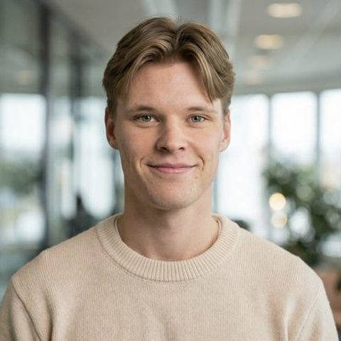

Elias Lyng
Digitalisering, tjenesteutvikling og infrastruktur
Jeg er tredjeårsstudent i informasjonssystemer ved Universitetet i Agder, med fordypning innen digitalisering og tjenesteutvikling. Gjennom studiet får jeg praktisk erfaring fra praksisprosjekt hos Digi Agder, samt et utvekslingssemester ved NMIT i Nelson, New Zealand, hvor den praktiske og anvendte tilnærmingen til læring ga meg nye perspektiver på hvordan teknologi og samarbeid fungerer i praksis. Jeg har også en interesse for infrastruktur og nettverk, og har blant annet bygget et eget homelab med Raspberry Pi, Docker og VPN-løsninger. Ved siden av studiene bruker jeg fritiden på musikk og sport.
Se CV (Elias L.)